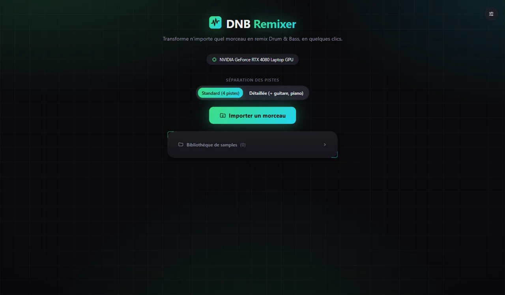

Application Windows qui sépare n'importe quelle musique en pistes (voix, batterie, basse, autres) grâce à l'IA, puis la transforme en remix Drum & Bass dans un mini-DAW intégré. Tout tourne en local sur ta carte graphique.
Projet privé — présenté ici en description et captures. Code et téléchargement non publics.

Modèle Demucs : 4 pistes, ou 6 avec guitare et piano.
Réarrangement de la structure, batterie, basse resynthétisée à 174 BPM.
Timeline multipiste, mixer, effets, automation et hébergement de plugins VST3.
Mix final, stems, FLAC et export MIDI de la basse.